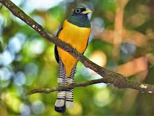
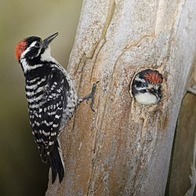
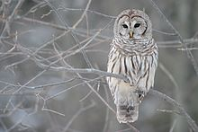
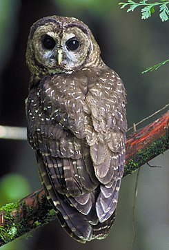
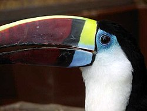
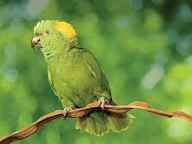
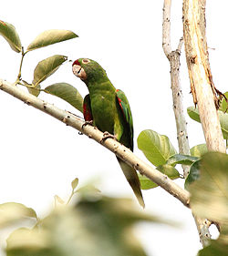
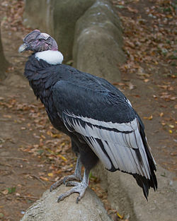
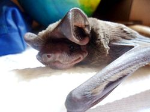
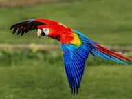

Aves
La avifauna es variada y muy abundante entre los que se encuentran:
Colibríes o gorriones en más de 20 especies diferentes; Una de ellas es el colibrí esmeralda, una especie de colibríes endémica de Honduras.
La viudita (Trogon rufus)

El pájaro carpintero (Phleoceastes guatemalensis)

La lechuza (Pulsatrix perspicillata)

El tecolote (Ciccaba virgata)

El Tucán o pico de navaja (Rhanfastus sulfuratus y Pteroglosus torcuatus)

Lora nuca amarilla (Amazona ochrocephala)

Perico verde de la costa (Aratinga finschi)

Rey zopilote o cóndor centroamericano (Sarcoramphus papa)

Eumops glaucinus

Guara Roja
